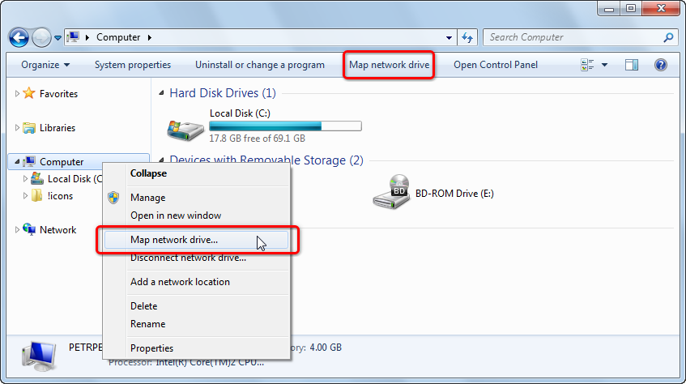
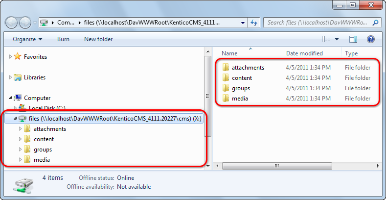

Mapping a WebDAV network drive
Once your server meets the requirements, you need to map a network drive in your operation system that will be pointing to your web server. There are two ways how this can be done:
Mapping a network drive in Windows command line
Open Windows command line (press [window]+R, type cmd and click OK).
Type the following command:
net use x: http://<your_domain>/cms/files
The x: part of the command determines which letter will be used for identification of the network drive in your system. Instead of x, you can use any letter that is not used for another drive yet.The <your_domain> part of the command needs to be replaced with the domain name of your website. So, for example, if your website is running on http://www.example.com, you would need to enter 'net use x: http://www.example.com/cms/files'. Similarly, for http://localhost/Kentico, you would need to enter 'net use x: http://localhost/Kentico/cms/files'.
Mapping a network drive in Windows
The following procedure is demonstrated on Windows 7. In other versions of Windows, it may be slightly different, while the principles and the entered values remain the same.
Open Windows Explorer.
Right‑click the Computer in the left menu and select Map network drive.
Alternatively, you can click the Computer and select the Map network drive action from the top menu.

In the Map Network Drive dialog, adjust the following values:
Drive - select the letter that will be assigned to the network drive in Windows.
Folder - enter a URL in format http://<your_domain>/cms/files where the <your_domain> part should be replaced with the domain name of your website.
Reconnect at logon - leave this option enabled if you want the drive to be connected next time your start Windows.
Connect using different credentials - use this option in case that you want to use a different user account than your current Windows account. In such case, you will be asked to enter logon credentials after clicking Finish.
Click Finish and wait until the network drive gets connected.
Mapping a network place on Windows Vista
When you experience problems while mapping a network drive on Windows XP, Windows Server 2003 or Windows Vista, you can map a network place instead:
Open the Start menu and right-click Computer and choose Map Network Drive from the context menu.
Click the link saying Connect to a Web site that you can use to store your pages and pictures. This will open the Add Network Place Wizard.
In the first step of the wizard, just click Next.
In the second step, choose Choose another network location and click Next.
In the third step, enter the URL in the http://<your_domain>/cms/files format and click Next.
In the fourth step, enter a name that will be used for the network location (e.g. MyNetworkPlace) and click Next.
In the final step, click Finish.
Once finished, the network place should be mapped and content of the WebDAV network drive should be accessible through it. Please note that in this case, the content will not be accessible under a drive letter (e.g. X:\), but under the name of the network place specified in step 4 of the wizard (e.g. \\MyNetworkPlace\).
Accessing the network drive
Once you have the network drive connected, it is recommended to check that you can access it. Open Windows Explorer or any other file manager that you are using. The drive should be available among other drives in your system, under the letter that you assigned to it when you mapped it.
If you open the drive, you should see that it contains four folders. Each of them contains different types of files stored by your website:
attachments - contains page attachments and files stored in pages' file fields. They can be found in folders resembling the website's content tree structure.
content - contains CMS.File pages stored in folders resembling the website's content tree structure.
media - contains a folder for each media library on the website, while each folder contains the actual content of the respective library.
groups - contains a folder for each group defined on the site, while each group folder contains the three folders mentioned above, containing only those attachments, content and media that belong to the particular group.

Folders on a mapped drive
Unusually long response time
If you are experience unusually long delays when opening a WebDAV drive, copying files to or from it or switching between different WebDAV drives, make sure you have the Automatically detect settings option disabled in Internet Explorer -> Tools -> Internet Options -> Connections -> LAN Settings.
See the following article for more details: http://support.microsoft.com/kb/2445570.
Multiple websites using the same domain
In a typical scenario, each website running in Kentico uses a different domain. Therefore, the URL of the mapped network drive would be different for each site, letting you map a drive separately for each website.
However, if you have multiple websites using the same domain (typically localhost in a development environment), only one of these websites can be running at a time while all others are stopped. In this case, the network drive always displays content of the site that is currently running.